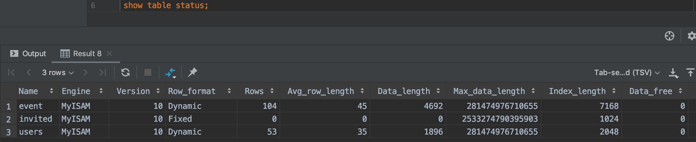
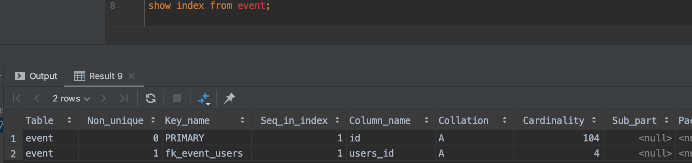
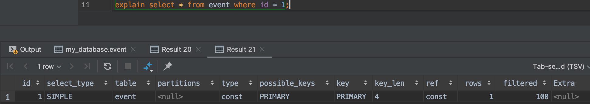
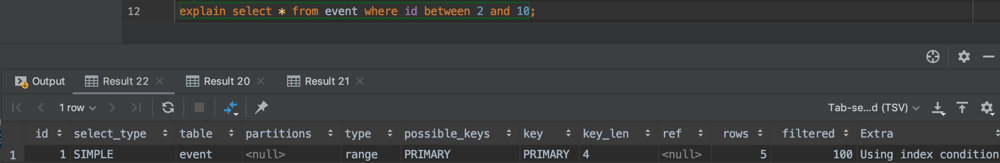
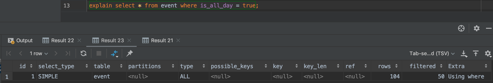

<!DOCTYPE html>
<html>
<head><meta name="generator" content="Hexo 3.9.0">
    <meta charset="utf-8">

    

    
    <title>데이터베이스의 성능 향상(feat. 인덱스) | Jade&#39;s Blog</title>
    
    <meta name="viewport" content="width=device-width, initial-scale=1, maximum-scale=1">
    
        <meta name="keywords" content="MySQL">
    
    <meta name="description" content="성능이란 ? 기본적으로 “빠르기”를 기준으로 한 개념  성능을 측정하는 2가지 지표 처리시간(Processing Time) or 응답시간(Response Time) 어떤 특정 처리의 시작부터 종료까지 걸린 시간   처리율(Throughput) 특정 처리(트랜잭션)를 단위 시간에 몇 건 처리 가능한가 ex) 트랜잭션을 초당 50건 처리하는 것이 가능하면, 5">
<meta name="keywords" content="MySQL">
<meta property="og:type" content="article">
<meta property="og:title" content="데이터베이스의 성능 향상(feat. 인덱스)">
<meta property="og:url" content="https://j2de.github.io/2019/10/17/database-index/index.html">
<meta property="og:site_name" content="Jade&#39;s Blog">
<meta property="og:description" content="성능이란 ? 기본적으로 “빠르기”를 기준으로 한 개념  성능을 측정하는 2가지 지표 처리시간(Processing Time) or 응답시간(Response Time) 어떤 특정 처리의 시작부터 종료까지 걸린 시간   처리율(Throughput) 특정 처리(트랜잭션)를 단위 시간에 몇 건 처리 가능한가 ex) 트랜잭션을 초당 50건 처리하는 것이 가능하면, 5">
<meta property="og:locale" content="en">
<meta property="og:image" content="https://j2de.github.io/2019/10/17/database-index/01.png">
<meta property="og:updated_time" content="2020-03-20T15:44:39.458Z">
<meta name="twitter:card" content="summary">
<meta name="twitter:title" content="데이터베이스의 성능 향상(feat. 인덱스)">
<meta name="twitter:description" content="성능이란 ? 기본적으로 “빠르기”를 기준으로 한 개념  성능을 측정하는 2가지 지표 처리시간(Processing Time) or 응답시간(Response Time) 어떤 특정 처리의 시작부터 종료까지 걸린 시간   처리율(Throughput) 특정 처리(트랜잭션)를 단위 시간에 몇 건 처리 가능한가 ex) 트랜잭션을 초당 50건 처리하는 것이 가능하면, 5">
<meta name="twitter:image" content="https://j2de.github.io/2019/10/17/database-index/01.png">
    
    <link rel="canonical" href="https://j2de.github.io/2019/10/17/database-index/">

    
        <link rel="alternate" href="https://j2de.github.io/feed.xml" title="Jade&#39;s Blog" type="application/atom+xml">
    

    
        <link rel="icon" href="/images/favicions/floppy_disk.ico">
    

    <link rel="stylesheet" href="/libs/font-awesome/css/font-awesome.min.css">
    <link rel="stylesheet" href="/libs/titillium-web/styles.css">
    <link rel="stylesheet" href="/libs/source-code-pro/styles.css">

    <link rel="stylesheet" href="/css/style.css">

    <script src="/libs/jquery/3.3.1/jquery.min.js"></script>
    
    
        <link rel="stylesheet" href="/libs/lightgallery/css/lightgallery.min.css">
    
    
        <link rel="stylesheet" href="/libs/justified-gallery/justifiedGallery.min.css">
    
    
        <script type="text/javascript">
(function(i,s,o,g,r,a,m) {i['GoogleAnalyticsObject']=r;i[r]=i[r]||function() {
(i[r].q=i[r].q||[]).push(arguments)},i[r].l=1*new Date();a=s.createElement(o),
m=s.getElementsByTagName(o)[0];a.async=1;a.src=g;m.parentNode.insertBefore(a,m)
})(window,document,'script','//www.google-analytics.com/analytics.js','ga');

ga('create', 'UA-146445480-1', 'auto');
ga('send', 'pageview');

</script>

    
    


    <link rel="stylesheet" href="https://cdn.rawgit.com/innks/NanumSquareRound/master/nanumsquareround.css">
    <meta name="naver-site-verification" content="075c9fa2134f2ba5473ea49c60f51a20afcdb2bf">
</head>
</html>
<body>
    <div id="wrap">
        <header id="header">
    <div id="header-outer" class="outer">
        <div class="container">
            <div class="container-inner">
                <div id="header-title">
                    <h1 class="logo-wrap">
                        <a href="/" class="logo"></a>
                    </h1>
                    
                        <h2 class="subtitle-wrap">
                            <p class="subtitle">An archive for daily discovery</p>
                        </h2>
                    
                </div>
                <div id="header-inner" class="nav-container">
                    <a id="main-nav-toggle" class="nav-icon fa fa-bars"></a>
                    <div class="nav-container-inner">
                        <ul id="main-nav">
                            
                                <li class="main-nav-list-item">
                                    <a class="main-nav-list-link" href="/">Home</a>
                                </li>
                            
                                        <ul class="main-nav-list"><li class="main-nav-list-item"><a class="main-nav-list-link" href="/categories/cs/">CS</a><ul class="main-nav-list-child"><li class="main-nav-list-item"><a class="main-nav-list-link" href="/categories/cs/database/">DataBase</a></li><li class="main-nav-list-item"><a class="main-nav-list-link" href="/categories/cs/os/">OS</a></li></ul></li><li class="main-nav-list-item"><a class="main-nav-list-link" href="/categories/programming/">Programming</a><ul class="main-nav-list-child"><li class="main-nav-list-item"><a class="main-nav-list-link" href="/categories/programming/common/">Common</a></li><li class="main-nav-list-item"><a class="main-nav-list-link" href="/categories/programming/java/">Java</a></li><li class="main-nav-list-item"><a class="main-nav-list-link" href="/categories/programming/javascript/">Javascript</a></li></ul></li><li class="main-nav-list-item"><a class="main-nav-list-link" href="/categories/server/">Server</a><ul class="main-nav-list-child"><li class="main-nav-list-item"><a class="main-nav-list-link" href="/categories/server/netty/">Netty</a></li><li class="main-nav-list-item"><a class="main-nav-list-link" href="/categories/server/orm/">ORM</a></li><li class="main-nav-list-item"><a class="main-nav-list-link" href="/categories/server/spring/">Spring</a></li><li class="main-nav-list-item"><a class="main-nav-list-link" href="/categories/server/test/">Test</a></li></ul></li><li class="main-nav-list-item"><a class="main-nav-list-link" href="/categories/system/">System</a><ul class="main-nav-list-child"><li class="main-nav-list-item"><a class="main-nav-list-link" href="/categories/system/docker/">Docker</a></li><li class="main-nav-list-item"><a class="main-nav-list-link" href="/categories/system/shell/">Shell</a></li></ul></li><li class="main-nav-list-item"><a class="main-nav-list-link" href="/categories/think/">Think</a></li><li class="main-nav-list-item"><a class="main-nav-list-link" href="/categories/troubleshooting/">Troubleshooting</a></li><li class="main-nav-list-item"><a class="main-nav-list-link" href="/categories/web/">Web</a></li></ul>
                                    
                                <li class="main-nav-list-item">
                                    <a class="main-nav-list-link" href="/about/index.html">About</a>
                                </li>
                            
                        </ul>
                        <nav id="sub-nav">
                            <div id="search-form-wrap">

    <form class="search-form">
        <input type="text" class="ins-search-input search-form-input" placeholder="Search">
        <button type="submit" class="search-form-submit"></button>
    </form>
    <div class="ins-search">
    <div class="ins-search-mask"></div>
    <div class="ins-search-container">
        <div class="ins-input-wrapper">
            <input type="text" class="ins-search-input" placeholder="Type something...">
            <span class="ins-close ins-selectable"><i class="fa fa-times-circle"></i></span>
        </div>
        <div class="ins-section-wrapper">
            <div class="ins-section-container"></div>
        </div>
    </div>
</div>
<script>
(function (window) {
    var INSIGHT_CONFIG = {
        TRANSLATION: {
            POSTS: 'Posts',
            PAGES: 'Pages',
            CATEGORIES: 'Categories',
            TAGS: 'Tags',
            UNTITLED: '(Untitled)',
        },
        ROOT_URL: '/',
        CONTENT_URL: '/content.json',
    };
    window.INSIGHT_CONFIG = INSIGHT_CONFIG;
})(window);
</script>
<script src="/js/insight.js"></script>

</div>
                        </nav>
                    </div>
                </div>
            </div>
        </div>
    </div>
</header>
        <div class="container">
            <div class="main-body container-inner">
                <div class="main-body-inner">
                    <section id="main">
                        <div class="main-body-header">
    <h1 class="header">
    
    <a class="page-title-link" href="/categories/cs/">CS</a><i class="icon fa fa-angle-right"></i><a class="page-title-link" href="/categories/cs/database/">DataBase</a>
    </h1>
</div>

                        <div class="main-body-content">
                            <article id="cs-database-database-index" class="article article-single article-type-cs-database" itemscope itemprop="blogPost">
    <div class="article-inner">
        
            <header class="article-header">
                
    
        <h1 class="article-title" itemprop="name">
        데이터베이스의 성능 향상(feat. 인덱스)
        </h1>
    

            </header>
        
        
            <div class="article-meta">
                
    <div class="article-date">
        <a href="/2019/10/17/database-index/" class="article-date">
            <time datetime="2019-10-16T17:56:01.000Z" itemprop="datePublished">2019-10-17</time>
        </a>
    </div>

		

                
    <div class="article-tag">
        <i class="fa fa-tag"></i>
        <a class="tag-link" href="/tags/mysql/">MySQL</a>
    </div>

            </div>
        
        
        <div class="article-entry" itemprop="articleBody">
            <h2 id="성능이란"><a href="#성능이란" class="headerlink" title="성능이란 ?"></a>성능이란 ?</h2><blockquote>
<p>기본적으로 “빠르기”를 기준으로 한 개념</p>
</blockquote>
<h3 id="성능을-측정하는-2가지-지표"><a href="#성능을-측정하는-2가지-지표" class="headerlink" title="성능을 측정하는 2가지 지표"></a>성능을 측정하는 2가지 지표</h3><ol>
<li><code>처리시간(Processing Time)</code> or <code>응답시간(Response Time)</code><ul>
<li>어떤 특정 처리의 시작부터 종료까지 걸린 시간</li>
</ul>
</li>
<li><code>처리율(Throughput)</code><ul>
<li>특정 처리(트랜잭션)를 단위 시간에 몇 건 처리 가능한가<ul>
<li>ex) 트랜잭션을 초당 50건 처리하는 것이 가능하면, 50 TPS(Transaction Per Second)</li>
</ul>
</li>
</ul>
</li>
</ol>
<h3 id="정점과-한계"><a href="#정점과-한계" class="headerlink" title="정점과 한계"></a>정점과 한계</h3><ul>
<li><p><code>처리율이 높은</code> 시스템일수록 (CPU나 하드웨어같은) <code>자원이 많이</code> 필요하다</p>
<ul>
<li>즉 동시에 실행되는 처리가 증가할 수록 필요한 물리 자원도 증가한다.</li>
</ul>
</li>
<li><p>이때 동시 실행 처리 수가 자원의 한계를 넘어서는 경우 응답시간이 상승하고 처리율이 떨어지며 성능이 나빠진다.</p>
</li>
<li><p>한 가지 자원이라도 한계에 이르면 성능이 나빠지기 시작하는데 이를 <code>버틀넥 포인트(Bottleneck Point)</code>, <code>병목</code>이라 한다.</p>
</li>
<li><p>시스템은 동시에 실행되는 처리가 가장 많아질 때를 기준으로 자원을 준비하지 않으면 <code>정점(Peek)</code>일 때 극단적인 지연을 일으킨다.</p>
</li>
<li><p>정점을 상정한 자원을 확보해두는 것을 <code>사이징(Sizing)</code>이나 <code>캐퍼시티 플랜(Capacity Planinig)</code>이라 한다.</p>
</li>
<li><p>정점일때와 아닐 때의 차이가 큰 경우 정점에 맞추는 경우 평상시에 낭비되는 자원이 크다.</p>
</li>
<li><p>그렇기에 클라우드를 통해 스케일업과 스케일아웃을 하며 동적인 자원관리를 하는 추세이다.</p>
<ul>
<li><code>스케일업(Scale-Up)</code> : 고성능 장비 도입</li>
<li><code>스케일아웃(Scale-Out)</code> : 장비 추가 도입</li>
</ul>
</li>
</ul>
<h2 id="데이터베이스의-성능"><a href="#데이터베이스의-성능" class="headerlink" title="데이터베이스의 성능"></a>데이터베이스의 성능</h2><h3 id="데이터베이스-병목"><a href="#데이터베이스-병목" class="headerlink" title="데이터베이스 병목"></a>데이터베이스 병목</h3><blockquote>
<p>데이터 베이스가 시스템에서 병목이 되기 쉬운 이유</p>
</blockquote>
<p><strong>1. 취급하는 데이터 양이 많다.</strong></p>
<ul>
<li>최근들어 저장되는 데이터가 폭발적으로 증가하는 추세라 데이터를 보존하는 저장소에서 병목이 일어나는 경우가 많다.</li>
</ul>
<p><strong>2. 자원 증가(스케일 아웃)를 통한 성능 향상이 어렵다.</strong></p>
<ul>
<li>데이터베이스의 병목 지점은 CPU나 메모리가 아니라 <code>주로 보조기억 장치</code>이므로 스케일 아웃이 어렵다.<ul>
<li>데이터베이스는 기본적으로 <code>Active-StandBy</code>나 <code>Active-Active</code> 구성을 취하기 때문</li>
<li>이런 이유로 주로 한정된 자원을 효율적으로 쓰기 위한 ‘<code>튜닝</code>‘이 발전함</li>
</ul>
</li>
<li>최근에는 저장소를 더 고속 매체인 <code>메모리</code>에 적재하는 등으로 <code>스케일업</code>에 의한 성능 개선도 이루어지고 있다. <ul>
<li>이런 발상으로 만들어진 데이터베이스가 인메모리 데이터베이스(In-memory)</li>
</ul>
</li>
</ul>
<h2 id="데이터베이스-성능을-결정하는-요인"><a href="#데이터베이스-성능을-결정하는-요인" class="headerlink" title="데이터베이스 성능을 결정하는 요인"></a>데이터베이스 성능을 결정하는 요인</h2><h3 id="데이터베이스의-실행-과정"><a href="#데이터베이스의-실행-과정" class="headerlink" title="데이터베이스의 실행 과정"></a>데이터베이스의 실행 과정</h3><p><strong>1. 파스 (Parse)</strong></p>
<ul>
<li>내부 프로그램인 Parsor가 구문 오류를 체크한다.</li>
</ul>
<p><strong>2. 실행계획 (Execution Plan OR Access Plan)</strong><br><strong>- 실행계획 작성 &gt; 실행계획 평가</strong></p>
<ul>
<li><p>내부 프로그램인 <code>Optimizer</code>가 SQL문에 어떤 경로로 접근할지 <code>계획</code>한다.</p>
<ul>
<li>프로그래머는 SQL을 선언만하고 과정은 옵티마이저가 하므로 일반적인 절차형 언어와 다르게 <code>선언형 언어</code>라 하기도 함.</li>
<li>옵티마이저가 보통 프로그래머보다 효율적인 실행계획을 세우므로 직접 실행계획을 세우는 것은 지양하는 것이 좋다.</li>
<li>옵티마이저가 최적의 속도로 동작할 수 있는 환경을 구성해주는 것이 중요</li>
</ul>
</li>
<li><p><code>통계 정보</code>를 참고해 <code>실행 계획</code>을 세운다.</p>
<ul>
<li><p>통계 정보란 ? 옵티마이저가 실행계획을 세울 때 참고하는 정보</p>
<ol>
<li>테이블의 행수,열수</li>
<li>각 열의 길이와 데이터형</li>
<li>테이블의 크기</li>
<li>열에 대한 기본키나 NOT NULL 제약의 정보</li>
<li>열값의 분산과 편향 등.</li>
</ol>
</li>
<li><p>통계 정보는 테이블에 보존되어 있다.</p>
<ul>
<li><p><code>show table status;</code><br></p>
<ul>
<li>Rows : 행 수</li>
<li>Avg_row_length : 평균 레코드 크기</li>
</ul>
</li>
<li><p><code>show index from [TABLE_NAME];</code><br></p>
<ul>
<li>Cardinality : 인덱스 대상의 분산도</li>
</ul>
</li>
</ul>
</li>
<li><p>통계 데이터는 대부분 <code>자동으로 수집</code>되어 구현된다.</p>
<ul>
<li>대체로 대량의 데이터가 변경되거나 특정 시간을 정할 수 있다.</li>
</ul>
</li>
</ul>
</li>
</ul>
<ol start="3">
<li>데이터 액세스</li>
</ol>
<h3 id="데이터베이스가-실행계획을-세우는-기준"><a href="#데이터베이스가-실행계획을-세우는-기준" class="headerlink" title="데이터베이스가 실행계획을 세우는 기준"></a>데이터베이스가 실행계획을 세우는 기준</h3><blockquote>
<p>인덱스 </p>
</blockquote>
<ul>
<li><p>인덱스의 유무로 <code>풀 스캔(full scan)</code>과 <code>레인지 스캔(range scan)</code>이 나뉜다.</p>
<ul>
<li>풀 스캔: 테이블의 레코드를 전부 읽는 것</li>
<li>레인지 스캔: 테이블 일부 레코드만 읽는 것</li>
</ul>
</li>
<li><p>인덱스가 있는 경우<br><br></p>
<ul>
<li><code>TYPE</code>이 All이 아닌 <code>CONST</code>, <code>RANGE</code></li>
<li>스캔 종류의 이름은 조건에 따라 조금씩 달라진다.</li>
</ul>
</li>
<li><p>인덱스가 없는 경우<br></p>
<ul>
<li>현재 예시 테이블은 <code>id</code>와 <code>fk</code>에만 인덱스가 존재한다.</li>
<li>인덱스가 없는 컬럼을 조회하므로 <code>ALL 풀 스캔</code>을 한다. </li>
<li><code>기본키</code>는 따로 설정하지 않아도 인덱스가 존재한다.</li>
</ul>
</li>
<li><p>인덱스 생성</p>
<ul>
<li><code>create index [INDEX_NAME] on [TABLE_NAME]([COLOMN_NAME])</code></li>
</ul>
</li>
</ul>
<h2 id="인덱스의-구조"><a href="#인덱스의-구조" class="headerlink" title="인덱스의 구조"></a>인덱스의 구조</h2><p></p>
<ul>
<li>B-Tree 로 되어있다.</li>
<li>따라서 데이터들은 반드시 <code>정렬</code>된 데이터로 유지된다.</li>
<li>B-Tree는 균형 트리이기에 어떤 값에 대해서도 <code>속도가 일정</code>하다(최선, 최악의 경우가 비슷)<ul>
<li>일반적으로 B-Tree는 3~4층 정도로 조절된다.</li>
</ul>
</li>
<li>처음 생성시 <code>균형 트리</code>이지만 <code>INSERT/DELETE/UPDATE</code> 등이 일어나면 트리가 깨지며 성능이 나빠질 수 있다.</li>
<li>따라서 <code>갱신</code> 빈도가 높은 테이블은 정기적으로 인덱스 재구성이 필요하다.</li>
</ul>
<h2 id="인덱스의-성능"><a href="#인덱스의-성능" class="headerlink" title="인덱스의 성능"></a>인덱스의 성능</h2><p><strong>- 데이터에 비례해 효과가 좋아진다.</strong></p>
<ul>
<li>어느정도 큰 데이터에서 생성하는 것이 좋다.  </li>
</ul>
<p><strong>- 정렬을 건너뛰는 것이 가능하다.</strong></p>
<ul>
<li>예를 들면 groupby로 count하는 경우<ul>
<li>인덱스가 없다면 <code>풀 스캔</code> + <code>정렬을 위한 임시영역에 파일을 저장</code>한다.<ul>
<li>이런식으로 임시영역을 사용해 처리하면 매우 느려 성능 이슈를 일으킬 수 있다.</li>
</ul>
</li>
<li>인덱스가 있다면 이미 정렬되어 있으므로 고속 처리가 가능하다.</li>
</ul>
</li>
<li>SQL 내부에서 정렬하는 경우<ul>
<li>GROUP BY</li>
<li>COUNT/SUM/AVG 등의 집약 함수</li>
<li>UNION/INTERSECT/EXCEPT 등의 집합연산</li>
</ul>
</li>
</ul>
<h2 id="인덱스-주의사항"><a href="#인덱스-주의사항" class="headerlink" title="인덱스 주의사항"></a>인덱스 주의사항</h2><ul>
<li>인덱스는 <code>SELECT</code> 성능을 향상시키고 <code>INSERT/UPDATE/DELECT</code> 성능을 약화시킨다.<ul>
<li>인덱스 갱신의 오버헤드로 성능이 떨어진다.</li>
</ul>
</li>
<li>너무 많은 인덱스를 만드는 경우 의도한 것과 다르게 실행될 수 있다.<ul>
<li>인덱스를 생성만 할 뿐 실행은 옵티마이저가 자동으로 하기 때문에 의도와 다르게 동작해 더 느릴 수 있다.</li>
</ul>
</li>
<li>따라서 크기가 큰 테이블에만 만들고</li>
<li>기본키 제약이나 유일성 제약이 붙은 경우 자동으로 인덱스가 생성되므로 추가 생성하지 않는다.</li>
<li><code>Cardinality</code>가 높은 열에 만든다.</li>
</ul>
<h2 id="성능-안티-패턴"><a href="#성능-안티-패턴" class="headerlink" title="성능 안티 패턴"></a>성능 안티 패턴</h2><ul>
<li>통계 정보 갱신 설정이 off인 경우</li>
<li>정기 갱신을 설정하고 데이터양이 급격하게 바뀌는 경우<ul>
<li>정기 갱신 전 바뀐 데이터에 대해 인덱스가 적용되지 않은 상태라 성능 향상을 기대하기 어렵다.</li>
</ul>
</li>
</ul>
<h2 id="Reference"><a href="#Reference" class="headerlink" title="Reference"></a>Reference</h2><ul>
<li>데이터베이스 첫걸음 </li>
</ul>

        </div>
        <footer class="article-footer">
            


    <a data-url="https://j2de.github.io/2019/10/17/database-index/" data-id="cklteezh8007icv89358u5557" class="article-share-link"><i class="fa fa-share"></i>Share</a>
<script>
    (function ($) {
        $('body').on('click', function() {
            $('.article-share-box.on').removeClass('on');
        }).on('click', '.article-share-link', function(e) {
            e.stopPropagation();

            var $this = $(this),
                url = $this.attr('data-url'),
                encodedUrl = encodeURIComponent(url),
                id = 'article-share-box-' + $this.attr('data-id'),
                offset = $this.offset(),
                box;

            if ($('#' + id).length) {
                box = $('#' + id);

                if (box.hasClass('on')){
                    box.removeClass('on');
                    return;
                }
            } else {
                var html = [
                    '<div id="' + id + '" class="article-share-box">',
                        '<input class="article-share-input" value="' + url + '">',
                        '<div class="article-share-links">',
                            '<a href="https://twitter.com/intent/tweet?url=' + encodedUrl + '" class="article-share-twitter" target="_blank" title="Twitter"></a>',
                            '<a href="https://www.facebook.com/sharer.php?u=' + encodedUrl + '" class="article-share-facebook" target="_blank" title="Facebook"></a>',
                            '<a href="http://pinterest.com/pin/create/button/?url=' + encodedUrl + '" class="article-share-pinterest" target="_blank" title="Pinterest"></a>',
                            '<a href="https://plus.google.com/share?url=' + encodedUrl + '" class="article-share-google" target="_blank" title="Google+"></a>',
                        '</div>',
                    '</div>'
                ].join('');

              box = $(html);

              $('body').append(box);
            }

            $('.article-share-box.on').hide();

            box.css({
                top: offset.top + 25,
                left: offset.left
            }).addClass('on');

        }).on('click', '.article-share-box', function (e) {
            e.stopPropagation();
        }).on('click', '.article-share-box-input', function () {
            $(this).select();
        }).on('click', '.article-share-box-link', function (e) {
            e.preventDefault();
            e.stopPropagation();

            window.open(this.href, 'article-share-box-window-' + Date.now(), 'width=500,height=450');
        });
    })(jQuery);
</script>

        </footer>
    </div>
    <script type="application/ld+json">
    {
        "@context": "https://schema.org",
        "@type": "BlogPosting",
        "author": {
            "@type": "Person",
            "name": "j2de"
        },
        "headline": "데이터베이스의 성능 향상(feat. 인덱스)",
        "image": "https://j2de.github.io01.png",
        "keywords": "MySQL",
        "genre": "CS DataBase",
        "datePublished": "2019-10-17",
        "dateCreated": "2019-10-17",
        "dateModified": "2020-03-21",
        "url": "https://j2de.github.io/2019/10/17/database-index/",
        "description": "성능이란 ?
기본적으로 “빠르기”를 기준으로 한 개념

성능을 측정하는 2가지 지표
처리시간(Processing Time) or 응답시간(Response Time)
어떤 특정 처리의 시작부터 종료까지 걸린 시간


처리율(Throughput)
특정 처리(트랜잭션)를 단위 시간에 몇 건 처리 가능한가
ex) 트랜잭션을 초당 50건 처리하는 것이 가능하면, 5"
        "wordCount": 674
    }
</script>

</article>

    <section id="comments">
    
        
    <div id="disqus_thread">
        <noscript>Please enable JavaScript to view the <a href="//disqus.com/?ref_noscript">comments powered by Disqus.</a></noscript>
    </div>

    
    </section>


                        </div>
                    </section>
                    <aside id="sidebar">
    <a class="sidebar-toggle" title="Expand Sidebar"><i class="toggle icon"></i></a>
    <div class="sidebar-top">
        <p>follow:</p>
        <ul class="social-links">
            
                
                <li>
                    <a class="social-tooltip" title="github" href="https://github.com/j2de" target="_blank" rel="external nofollow noopener noreferrer">
                        <i class="icon fa fa-github"></i>
                    </a>
                </li>
                
            
                
                <li>
                    <a class="social-tooltip" title="rss" href="https://j2de.github.io/feed.xml" target="_blank" rel="noopener">
                        <i class="icon fa fa-rss"></i>
                    </a>
                </li>
                
            
        </ul>
    </div>
    
        
<nav id="article-nav">
    
        <a href="/2019/10/20/functional-thinking-ch7/" id="article-nav-newer" class="article-nav-link-wrap">
        <strong class="article-nav-caption">newer</strong>
        <p class="article-nav-title">
        
            함수형 사고 - ch7 실용적 사고
        
        </p>
        <i class="icon fa fa-chevron-right" id="icon-chevron-right"></i>
    </a>
    
    
        <a href="/2019/10/16/functional-thinking-ch2/" id="article-nav-older" class="article-nav-link-wrap">
        <strong class="article-nav-caption">older</strong>
        <p class="article-nav-title">함수형 사고 - ch2 전환</p>
        <i class="icon fa fa-chevron-left" id="icon-chevron-left"></i>
        </a>
    
</nav>

    
    <div class="widgets-container">
        
            
                

            
                
    <div class="widget-wrap">
        <h3 class="widget-title">recents</h3>
        <div class="widget">
            <ul id="recent-post" class="no-thumbnail">
                
                    <li>
                        
                        <div class="item-inner">
                            <p class="item-category"></p>
                            <p class="item-title"><a href="/2021/03/04/post-test/" class="title">post test</a></p>
                            <p class="item-date"><time datetime="2021-03-03T23:33:53.000Z" itemprop="datePublished">2021-03-04</time></p>
                        </div>
                    </li>
                
                    <li>
                        
                        <div class="item-inner">
                            <p class="item-category"><a class="article-category-link" href="/categories/troubleshooting/">Troubleshooting</a></p>
                            <p class="item-title"><a href="/2020/02/01/reverting-invalid-git-merge/" class="title">git 커밋 중간에 잘못된 merge 되돌리기</a></p>
                            <p class="item-date"><time datetime="2020-02-01T14:41:26.000Z" itemprop="datePublished">2020-02-01</time></p>
                        </div>
                    </li>
                
                    <li>
                        
                        <div class="item-inner">
                            <p class="item-category"><a class="article-category-link" href="/categories/think/">Think</a></p>
                            <p class="item-title"><a href="/2020/01/20/women-who-code-talk-with-sonia-from-ms/" class="title">Talk with Sonia from Microsoft - Inspiring Tech Women</a></p>
                            <p class="item-date"><time datetime="2020-01-20T13:54:30.000Z" itemprop="datePublished">2020-01-20</time></p>
                        </div>
                    </li>
                
                    <li>
                        
                        <div class="item-inner">
                            <p class="item-category"><a class="article-category-link" href="/categories/programming/">Programming</a><i class="icon fa fa-angle-right"></i><a class="article-category-link" href="/categories/programming/common/">Common</a></p>
                            <p class="item-title"><a href="/2020/01/19/encryption-vs-hash/" class="title">암호화 vs 해시</a></p>
                            <p class="item-date"><time datetime="2020-01-19T12:03:04.000Z" itemprop="datePublished">2020-01-19</time></p>
                        </div>
                    </li>
                
                    <li>
                        
                        <div class="item-inner">
                            <p class="item-category"><a class="article-category-link" href="/categories/programming/">Programming</a><i class="icon fa fa-angle-right"></i><a class="article-category-link" href="/categories/programming/java/">Java</a></p>
                            <p class="item-title"><a href="/2019/10/20/java-stream/" class="title">Java - Stream 기초</a></p>
                            <p class="item-date"><time datetime="2019-10-19T21:54:07.000Z" itemprop="datePublished">2019-10-20</time></p>
                        </div>
                    </li>
                
            </ul>
        </div>
    </div>

            
                
    <div class="widget-wrap widget-list">
        <h3 class="widget-title">categories</h3>
        <div class="widget">
            <ul class="category-list"><li class="category-list-item"><a class="category-list-link" href="/categories/cs/">CS</a><span class="category-list-count">4</span><ul class="category-list-child"><li class="category-list-item"><a class="category-list-link" href="/categories/cs/database/">DataBase</a><span class="category-list-count">3</span></li><li class="category-list-item"><a class="category-list-link" href="/categories/cs/os/">OS</a><span class="category-list-count">1</span></li></ul></li><li class="category-list-item"><a class="category-list-link" href="/categories/programming/">Programming</a><span class="category-list-count">37</span><ul class="category-list-child"><li class="category-list-item"><a class="category-list-link" href="/categories/programming/common/">Common</a><span class="category-list-count">4</span></li><li class="category-list-item"><a class="category-list-link" href="/categories/programming/java/">Java</a><span class="category-list-count">24</span></li><li class="category-list-item"><a class="category-list-link" href="/categories/programming/javascript/">Javascript</a><span class="category-list-count">9</span></li></ul></li><li class="category-list-item"><a class="category-list-link" href="/categories/server/">Server</a><span class="category-list-count">16</span><ul class="category-list-child"><li class="category-list-item"><a class="category-list-link" href="/categories/server/netty/">Netty</a><span class="category-list-count">8</span></li><li class="category-list-item"><a class="category-list-link" href="/categories/server/orm/">ORM</a><span class="category-list-count">3</span></li><li class="category-list-item"><a class="category-list-link" href="/categories/server/spring/">Spring</a><span class="category-list-count">2</span></li><li class="category-list-item"><a class="category-list-link" href="/categories/server/test/">Test</a><span class="category-list-count">3</span></li></ul></li><li class="category-list-item"><a class="category-list-link" href="/categories/system/">System</a><span class="category-list-count">4</span><ul class="category-list-child"><li class="category-list-item"><a class="category-list-link" href="/categories/system/docker/">Docker</a><span class="category-list-count">3</span></li><li class="category-list-item"><a class="category-list-link" href="/categories/system/shell/">Shell</a><span class="category-list-count">1</span></li></ul></li><li class="category-list-item"><a class="category-list-link" href="/categories/think/">Think</a><span class="category-list-count">2</span></li><li class="category-list-item"><a class="category-list-link" href="/categories/troubleshooting/">Troubleshooting</a><span class="category-list-count">7</span></li><li class="category-list-item"><a class="category-list-link" href="/categories/web/">Web</a><span class="category-list-count">3</span></li></ul>
        </div>
    </div>


            
                
    <div class="widget-wrap widget-list">
        <h3 class="widget-title">archives</h3>
        <div class="widget">
            <ul class="archive-list"><li class="archive-list-item"><a class="archive-list-link" href="/archives/2021/03/">March 2021</a><span class="archive-list-count">1</span></li><li class="archive-list-item"><a class="archive-list-link" href="/archives/2020/02/">February 2020</a><span class="archive-list-count">1</span></li><li class="archive-list-item"><a class="archive-list-link" href="/archives/2020/01/">January 2020</a><span class="archive-list-count">2</span></li><li class="archive-list-item"><a class="archive-list-link" href="/archives/2019/10/">October 2019</a><span class="archive-list-count">6</span></li><li class="archive-list-item"><a class="archive-list-link" href="/archives/2019/09/">September 2019</a><span class="archive-list-count">1</span></li><li class="archive-list-item"><a class="archive-list-link" href="/archives/2019/08/">August 2019</a><span class="archive-list-count">1</span></li><li class="archive-list-item"><a class="archive-list-link" href="/archives/2019/07/">July 2019</a><span class="archive-list-count">1</span></li><li class="archive-list-item"><a class="archive-list-link" href="/archives/2019/06/">June 2019</a><span class="archive-list-count">2</span></li><li class="archive-list-item"><a class="archive-list-link" href="/archives/2019/04/">April 2019</a><span class="archive-list-count">3</span></li><li class="archive-list-item"><a class="archive-list-link" href="/archives/2019/03/">March 2019</a><span class="archive-list-count">1</span></li><li class="archive-list-item"><a class="archive-list-link" href="/archives/2019/02/">February 2019</a><span class="archive-list-count">2</span></li><li class="archive-list-item"><a class="archive-list-link" href="/archives/2019/01/">January 2019</a><span class="archive-list-count">10</span></li><li class="archive-list-item"><a class="archive-list-link" href="/archives/2018/12/">December 2018</a><span class="archive-list-count">1</span></li><li class="archive-list-item"><a class="archive-list-link" href="/archives/2018/11/">November 2018</a><span class="archive-list-count">6</span></li><li class="archive-list-item"><a class="archive-list-link" href="/archives/2018/10/">October 2018</a><span class="archive-list-count">6</span></li><li class="archive-list-item"><a class="archive-list-link" href="/archives/2018/09/">September 2018</a><span class="archive-list-count">5</span></li><li class="archive-list-item"><a class="archive-list-link" href="/archives/2018/08/">August 2018</a><span class="archive-list-count">11</span></li><li class="archive-list-item"><a class="archive-list-link" href="/archives/2018/07/">July 2018</a><span class="archive-list-count">3</span></li><li class="archive-list-item"><a class="archive-list-link" href="/archives/2018/06/">June 2018</a><span class="archive-list-count">2</span></li><li class="archive-list-item"><a class="archive-list-link" href="/archives/2018/05/">May 2018</a><span class="archive-list-count">9</span></li></ul>
        </div>
    </div>


            
                
    <div class="widget-wrap widget-float">
        <h3 class="widget-title">tag cloud</h3>
        <div class="widget tagcloud">
            <a href="/tags/authrization/" style="font-size: 11.11px;">Authrization</a> <a href="/tags/design-pattern/" style="font-size: 10px;">Design Pattern</a> <a href="/tags/docker/" style="font-size: 12.22px;">Docker</a> <a href="/tags/effective-java/" style="font-size: 18.89px;">Effective Java</a> <a href="/tags/encryption/" style="font-size: 10px;">Encryption</a> <a href="/tags/fish-shell/" style="font-size: 10px;">Fish Shell</a> <a href="/tags/functional-programming/" style="font-size: 10px;">Functional Programming</a> <a href="/tags/functional-thinking/" style="font-size: 12.22px;">Functional Thinking</a> <a href="/tags/git/" style="font-size: 11.11px;">Git</a> <a href="/tags/gradle/" style="font-size: 10px;">Gradle</a> <a href="/tags/http/" style="font-size: 10px;">HTTP</a> <a href="/tags/hash/" style="font-size: 10px;">Hash</a> <a href="/tags/hibernate/" style="font-size: 12.22px;">Hibernate</a> <a href="/tags/intellij/" style="font-size: 10px;">IntelliJ</a> <a href="/tags/jpa/" style="font-size: 10px;">JPA</a> <a href="/tags/java/" style="font-size: 20px;">Java</a> <a href="/tags/javascript/" style="font-size: 16.67px;">Javascript</a> <a href="/tags/junit/" style="font-size: 10px;">Junit</a> <a href="/tags/maven/" style="font-size: 10px;">Maven</a> <a href="/tags/meetup/" style="font-size: 10px;">Meetup</a> <a href="/tags/mysql/" style="font-size: 12.22px;">MySQL</a> <a href="/tags/netty/" style="font-size: 15.56px;">Netty</a> <a href="/tags/network/" style="font-size: 15.56px;">Network</a> <a href="/tags/oauth2/" style="font-size: 12.22px;">OAuth2</a> <a href="/tags/os/" style="font-size: 10px;">OS</a> <a href="/tags/reactjs/" style="font-size: 10px;">ReactJS</a> <a href="/tags/refactoring/" style="font-size: 10px;">Refactoring</a> <a href="/tags/sts/" style="font-size: 11.11px;">STS</a> <a href="/tags/shell/" style="font-size: 10px;">Shell</a> <a href="/tags/spring/" style="font-size: 13.33px;">Spring</a> <a href="/tags/springboot/" style="font-size: 12.22px;">SpringBoot</a> <a href="/tags/stub/" style="font-size: 10px;">Stub</a> <a href="/tags/study/" style="font-size: 12.22px;">Study</a> <a href="/tags/tdd/" style="font-size: 10px;">TDD</a> <a href="/tags/tacademy/" style="font-size: 10px;">Tacademy</a> <a href="/tags/test/" style="font-size: 12.22px;">Test</a> <a href="/tags/think/" style="font-size: 10px;">Think</a> <a href="/tags/troubleshooting/" style="font-size: 14.44px;">Troubleshooting</a> <a href="/tags/web/" style="font-size: 12.22px;">Web</a> <a href="/tags/women-who-code/" style="font-size: 10px;">Women Who Code</a> <a href="/tags/생활코딩/" style="font-size: 17.78px;">생활코딩</a>
        </div>
    </div>


            
        
    </div>
</aside>

                </div>
            </div>
        </div>
        <footer id="footer">
    <div class="container">
        <div class="container-inner">
            <a id="back-to-top" href="javascript:;"><i class="icon fa fa-angle-up"></i></a>
            <div class="credit">
                <h1 class="logo-wrap">
                    <a href="/" class="logo"></a>
                </h1>
                <p>&copy; 2021 j2de</p>
                <p>Powered by <a href="//hexo.io/" target="_blank">Hexo</a>. Theme by <a href="//github.com/ppoffice" target="_blank">PPOffice</a></p>
            </div>
            <div class="footer-plugins">
              
    


            </div>
        </div>
    </div>
</footer>

        
    
    <script>
    var disqus_shortname = 'kodakyung';
    
    
    var disqus_url = 'https://j2de.github.io/2019/10/17/database-index/';
    
    (function() {
    var dsq = document.createElement('script');
    dsq.type = 'text/javascript';
    dsq.async = true;
    dsq.src = '//' + disqus_shortname + '.disqus.com/embed.js';
    (document.getElementsByTagName('head')[0] || document.getElementsByTagName('body')[0]).appendChild(dsq);
    })();
    </script>


    
        <script src="/libs/lightgallery/js/lightgallery.min.js"></script>
        <script src="/libs/lightgallery/js/lg-thumbnail.min.js"></script>
        <script src="/libs/lightgallery/js/lg-pager.min.js"></script>
        <script src="/libs/lightgallery/js/lg-autoplay.min.js"></script>
        <script src="/libs/lightgallery/js/lg-fullscreen.min.js"></script>
        <script src="/libs/lightgallery/js/lg-zoom.min.js"></script>
        <script src="/libs/lightgallery/js/lg-hash.min.js"></script>
        <script src="/libs/lightgallery/js/lg-share.min.js"></script>
        <script src="/libs/lightgallery/js/lg-video.min.js"></script>
    
    
        <script src="/libs/justified-gallery/jquery.justifiedGallery.min.js"></script>
    
    


<!-- Custom Scripts -->
<script src="/js/main.js"></script>

    </div>
</body>

